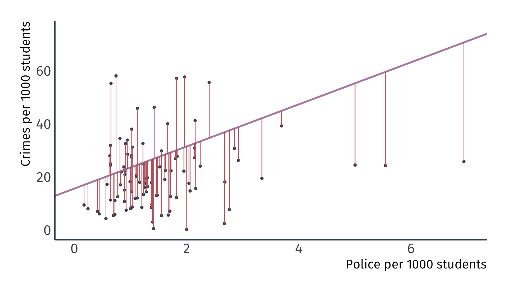
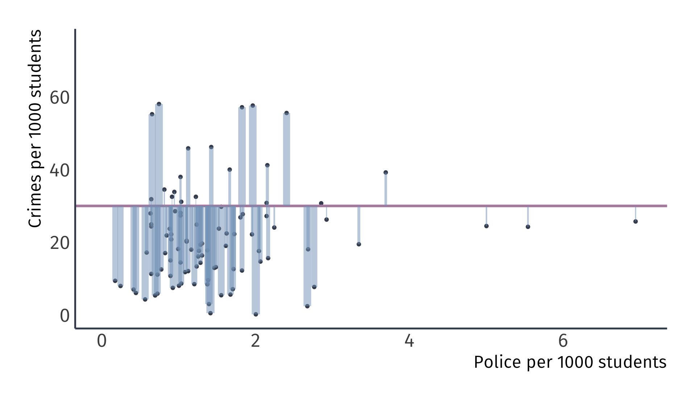
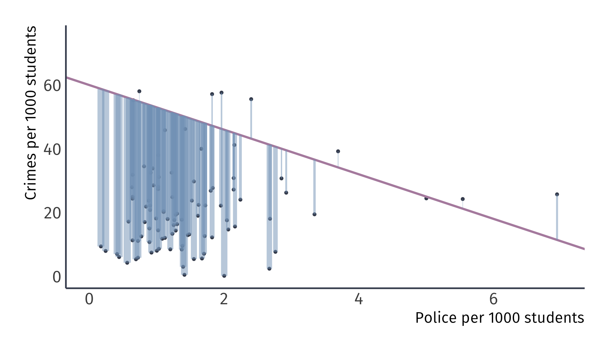

Regression logic
EC 320, Set 04
Spring 2023
Housekeeping
PS02:
- Due Tuesday at 11:59p
- Covers remaining topics from the review and from lecture Wednesday
LA03:
- Due Friday at 5:00p
Reading: (up to this point)
ItE: R, 1 MM: 1, 2
Regression logic
Regression models
Modeling is about reducing something really complicated into something simple that represents some part of the complicated reality.
- Try to tell stories that are easy to understand, and easy to learn from
- Model toy versions of reality
Economists often rely on linear regression for statistical comparisons.
- Describes the relationship between a dependent (endogenous) variable and one or more explanatory (exogenous) variable(s)
- “Linear” is more flexible than you think
Regression models
Regression analysis helps us make all else equal comparisons
Running regressions provide correlative (and even causal) information between two variables
Ex. By how much does \(Y\) change when \(X\) increases by one unit?
Regression models
Modelling forces us to be explicit about the potential sources of selection bias
- Model the effect of \(X\) on \(Y\) while controlling for potential confounders that may muddy the water
- Failure to account for sources of selection bias, leads to biased estimates.
Ex. Not controlling for confounding variables, leads to omitted-variable bias, a close cousin of selection bias
- Why? Omitted variables that correlate with our covariate of interest, hides within the model, distorting our results.
Returns to education
Research Question: By how much does an additional year of schooling increase future earnings?
- Dependent variable: Earnings
- Independent variable: An additional year of school
Q. How might education increase earnings?
Q. Why might a simple comparison between high and low educated not isolate the economic returns to education?
More education (X) increases lifetime earnings (Y)

More education (X) increases lifetime earnings (Y) along with a lot of other things (U).

More education (X) increases lifetime earnings (Y) along with a lot of other things (U). But a lot of other things (U) also impact education (X).

Any unobserved variable that connects a backdoor path between education (X) and earnings (Y) is called a confounder
Returns to education
How might we estimate the causal effect of an additional year of schooling on earnings?
Approach 1: Compare average earnings of private college graduates with those of public college graduates.
- Prone to selection bias by variety of confounding variables
Approach 2: Estimate a regression that compares the earnings of individuals with the same admissions profiles.
- Try to control for confounders by including them in the model
But before taking on confounders and using regression to link causal relationships… let’s breakdown the anatomy of the simple regression model
Simple regression model
The regression model
We can estimate the effect of \(X\) on \(Y\) by estimating a regression model:
\[Y_i = \beta_0 + \beta_1 X_i + u_i\]
- \(Y_i\) is the outcome variable.
- \(X_i\) is the treatment variable (continuous).
- \(\beta_0\) is the intercept parameter. \(\mathop{\mathbb{E}}\left[ {Y_i | X_i=0} \right] = \beta_0\)
- \(\beta_1\) is the slope parameter, which under the correct causal setting represents marginal change in \(X_i\)’s effect on \(Y_i\). \(\frac{\partial Y_i}{\partial X_i} = \beta_1\)
- \(u_i\) is an error term including all other (omitted) factors affecting \(Y_i\).
The error term
\(u_i\) is quite special
Consider the data generating process of variable \(Y_i\),
- \(u_i\) captures all unobserved variables that explain variation in \(Y_i\).
Some error will exist in all models, our aim is to minimize error under a set of constraints
- Error is the price we are willing to accept for simplified model
The error term
Five items contribute to the existence of the disturbance term:
1. Omission of explanatory variables
- Our description (model) of the relationship between \(Y\) and \(X\) is a simplification
- Other variables have been left out (omitted)
The error term
Five items contribute to the existence of the disturbance term:
1. Omission of explanatory variables
2. Aggregation of Variables
- Microeconomic relationships are often summarized
- Ex. Housing prices (\(X\)) are described by county-level median home value data
The error term
Five items contribute to the existence of the disturbance term:
1. Omission of explanatory variables
2. Aggregation of Variables
3. Model misspecificiation
- Model structure is incorrectly specified
- Ex. \(Y\) depends on the anticipated value of \(X\) in the previous period, not \(X\)
The error term
Five items contribute to the existence of the disturbance term:
1. Omission of explanatory variables
2. Aggregation of Variables
3. Model misspecificiation
4. Functional misspecificiation
- The functional relationship is specified incorrectly
- True relationship is nonlinear, not linear
The error term
Five items contribute to the existence of the disturbance term:
1. Omission of explanatory variables
2. Aggregation of Variables
3. Model misspecificiation
4. Functional misspecificiation
5. Measurement error
- Measurement of the variables in the data is just wrong
- \(Y\) or \(X\)
The error term
Five items contribute to the existence of the disturbance term:
1. Omission of explanatory variables
2. Aggregation of Variables
3. Model misspecificiation
4. Functional misspecificiation
5. Measurement error
Running regressions
Using an estimator with data on \(X_i\) and \(Y_i\), we can estimate a fitted regression line:
\[ \hat{Y_i} = \hat{\beta}_0 + \hat{\beta}_1 X_i \]
- \(\hat{Y_i}\) is the fitted value of \(Y_i\).
- \(\hat{\beta}_0\) is the estimated intercept.
- \(\hat{\beta}_1\) is the estimated slope.
This procedure produces misses, known as residuals, \(Y_i - \hat{Y_i}\)
I think it would be easier to think about regression with a concrete example.
Ex. Effect of police on crime
Ex. Effect of police on crime
- Empirical question:
-
Does the number of on-campus police officers affect campus crime rates? If so, by how much?
Always plot your data first
Ex. Effect of police on crime
The scatter plot suggest that a weak positive relationship exists
- A sample correlation of 0.14 confirms this
But correlation does not imply causation
Lets estimate a statistical model
Ex. Effect of police on crime
We express the relationship between a explained variable and an explanatory variable as linear:
\[ {\color{#81A1C1} \text{Crime}_i} = \beta_1 + \beta_2 {\color{#B48EAD} \text{Police}_i} + u_i. \]
\(\beta_1\) is the intercept or constant.
\(\beta_2\) is the slope coefficient.
\(u_i\) is an error term or disturbance term.
Ex. Effect of police on crime
The intercept tells us the expected value of \(\text{Crime}_i\) when \(\text{Police}_i = 0\).
\[ \text{Crime}_i = {\color{#BF616A} \beta_1} + \beta_2\text{Police}_i + u_i \]
Usually not the focus of an analysis.
Ex. Effect of police on crime
The slope coefficient tells us the expected change in \(\text{Crime}_i\) when \(\text{Police}_i\) increases by one.
\[ \text{Crime}_i = \beta_1 + {\color{#BF616A} \beta_2} \text{Police}_i + u_i \]
“A one-unit increase in \(\text{Police}_i\) is associated with a \(\color{#BF616A}{\beta_2}\)-unit increase in \(\text{Crime}_i\).”
Interpretation of this parameter is crucial
Under certain (strong) assumptions1, \(\color{#BF616A}{\beta_2}\) is the effect of \(X_i\) on \(Y_i\).
- Otherwise, it’s the association of \(X_i\) with \(Y_i\).
Ex. Effect of police on crime
The error term reminds us that \(\text{Police}_i\) does not perfectly explain \(Y_i\).
\[ \text{Crime}_i = \beta_1 + \beta_2\text{Police}_i + {\color{#BF616A} u_i} \]
Represents all other factors that explain \(\text{Crime}_i\).
- Useful mnemonic: pretend that \(u\) stands for “unobserved” or “unexplained.”
Ex. Effect of police on crime
How might we apply the simple linear regression model to our question about the effect of on-campus police on campus crime?
\[ \text{Crime}_i = \beta_1 + \beta_2\text{Police}_i + u_i. \]
- \(\beta_1\) is the crime rate for colleges without police.
- \(\beta_2\) is the increase in the crime rate for an additional police officer per 1000 students.
Ex. Effect of police on crime
How might we apply the simple linear regression model to our question?
\[ \text{Crime}_i = \beta_1 + \beta_2\text{Police}_i + u_i \]
\(\beta_1\) and \(\beta_2\) are the unobserved population parameters we want
We estimate
\(\hat{\beta_1}\) and \(\hat{\beta_2}\) generate predictions of \(\text{Crime}_i\) called \(\widehat{\text{Crime}_i}\).
We call the predictions of the dependent variable fitted values.
- Together, these trace a line: \(\widehat{\text{Crime}_i} = \hat{\beta_1} + \hat{\beta_2}\text{Police}_i\).
So, the question becomes, how do I pick \(\hat{\beta_1}\) and \(\hat{\beta_2}\)
Let’s take some guesses:
Let’s take some guesses: \(\hat{\beta_1} = 60\) and \(\hat{\beta_2}=-7\)
Does this line represent the data well?
Let’s take some guesses: \(\hat{\beta_1} = 60\) and \(\hat{\beta_2}=-7\)
What about this one?
Let’s take some guesses: \(\hat{\beta_1} = 60\) and \(\hat{\beta_2}=-7\)
Or this one?
Residuals
Using \(\hat{\beta_1}\) and \(\hat{\beta_2}\) to make \(\hat{Y_i}\) generates misses.
We call these misses residuals:
\[ {\color{#BF616A} \hat{u}_i} = {\color{#BF616A}Y_i - \hat{Y_i}}. \]
AKA \({\color{#BF616A}e_i}\).
\(\hat{\beta_1} = 60\) and \(\hat{\beta_2}=-7\)

Does this line represent the data well?
Residuals
What is we picked an estimator that minimizes the residuals?
Why not minimize
\[ \sum_{i=1}^n \hat{u}_i^2 \]
so that the estimator makes fewer big misses?
This estimator, the residual sum of squares (RSS), is convenient because squared numbers are never negative so we can minimize an absolute sum of the residuals
RSS gives bigger penalties to bigger residuals.
RSS gives bigger penalties to bigger residuals.
RSS gives bigger penalties to bigger residuals.
Minimizing RSS
We could test thousands of guesses of \(\beta_1\) and \(\beta_2\) and pick the pair the has the smallest RSS
Or… We could just do a little math
Ordinary least squares
OLS
The OLS estimator chooses the parameters \(\hat{\beta_1}\) and \(\hat{\beta_2}\) that minimize the residual sum of squares (RSS):
\[ \min_{\hat{\beta}_1,\, \hat{\beta}_2} \quad \color{#BF616A}{\sum_{i=1}^n \hat{u}_i^2} \]
This is why we call the estimator ordinary least squares.
OLS Formulas
For details, see the handout posted on Canvas.
Slope coefficient
\[ \hat{\beta}_2 = \dfrac{\sum_{i=1}^n (Y_i - \bar{Y})(X_i - \bar{X})}{\sum_{i=1}^n (X_i - \bar{X})^2} \]
Intercept
\[ \hat{\beta}_1 = \bar{Y} - \hat{\beta}_2 \bar{X} \]
Slope coefficient
The slope estimator is equal to the sample covariance divided by the sample variance of \(X\):
\[ \begin{aligned} \hat{\beta}_2 &= \dfrac{\sum_{i=1}^n (Y_i - \bar{Y})(X_i - \bar{X})}{\sum_{i=1}^n (X_i - \bar{X})^2} \\ \\ &= \dfrac{ \frac{1}{n-1} \sum_{i=1}^n (Y_i - \bar{Y})(X_i - \bar{X})}{ \frac{1}{n-1} \sum_{i=1}^n (X_i - \bar{X})^2} \\ \\ &= \dfrac{S_{XY}}{S^2_X}. \end{aligned} \]
Continue with OLS next time
EC320, Set 04 | Regression logic